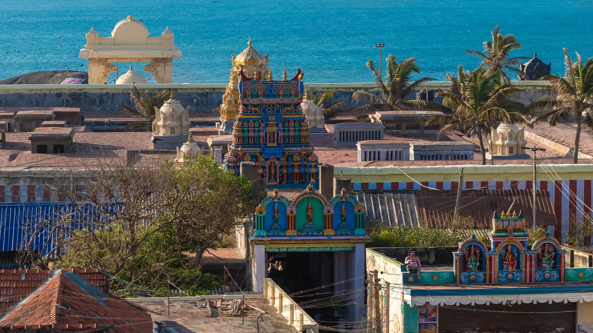

Bhagavathy Amman Temple
Right aside the resplendent sea nestles a historic temple that is among the most sacred in India. Adorning the sanctum sanctorum of the temple is the glorious idol of Devi Kanyakumari – a sight that makes anyone bow down in admiration.
Temples are a huge part of the rich South Indian culture. However there are some temples that simply stand out for very many reasons. The Bhagavathy Amman Temple in Kanyakumari is indeed one such place of worship visited by millions of devotees and other tourists every year. Not only is the place holy by all means, it is also one of the most beautiful temples in the world – thanks to the exquisite architectural side and the tranquil sea-side setting it boasts of.
The temple is one of the 108 Shakthi Peethas and is dedicated to goddess Devi Kanyakumari, referred to as the virgin goddess. The temple has a history of over 3000 years and is surrounded by strong stone walls. There are other shrines within the temple complex that are dedicated to Lord Surya Deva, Lord Ganesha, Lord Ayyappa, Goddess Bala Sundari and Goddess Vijaya Sundari. The main entry to the temple is via the north gate. The eastern gate of the temple is mostly closed and open only on special occasions.
The origin of the temple is found in various Hindu scriptures and legends. The popular legend is that demon Banasura gained a blessing that he could be killed only by a virgin girl. To eliminate the threat of Banadura, Goddess Parasakthi took the form of Kumari, or a virgin girl. The goddess eventually defeated Banasura. Saint Narada and Lord Parasurama requested the goddess to exist on earth till the end of Kaliyuga, which she accepted.


Buses ply from major cities like Thiruvananthapuram, Madurai, Coimbatore, Puducherry and Chennai to Kanyakumari Bus Stand, Puthugramam.
Thiruvananthapuram International Airport, about 90 km away.
Kanyakumari Station, about 1 km away
The perfect time to experience Kanyakumari is from November to March as the weather would be cool and pleasant. Summers can be really hot as the destination has a tropical climate.